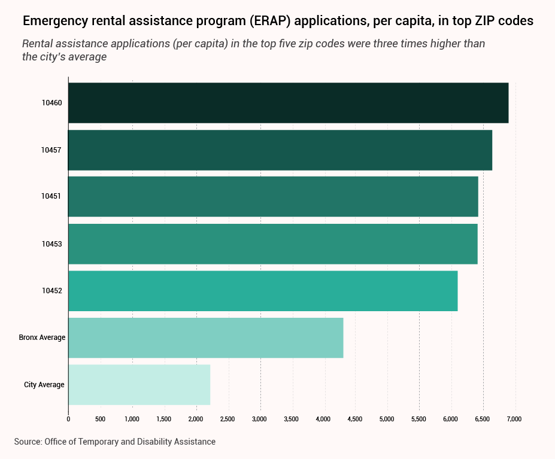
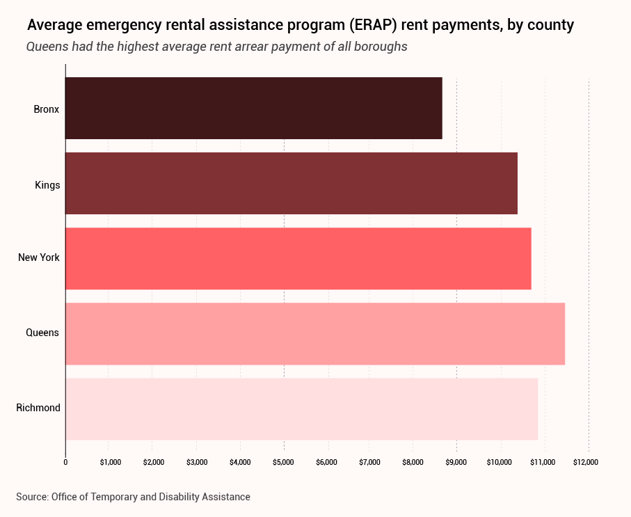
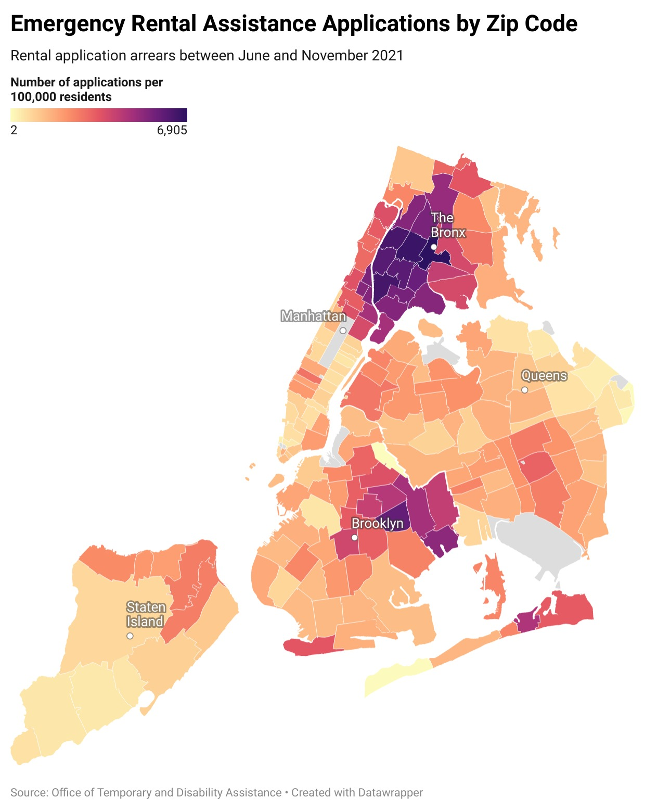

Yoselyn Gomez dreams of a future where she can work in her community and earn more than minimum wage. But after being laid off from her customer service job at the start of the pandemic and remaining unemployed for over a year, Gomez had no choice but to take a $15-an-hour seasonal retail job at Macy’s in Manhattan. She wakes up at 3 a.m. each day to commute to her job by 6, and often relies on local food banks to keep food on the table.
And yet, despite all her efforts, she is 12 months behind on rent and other bills. She’s afraid of what will happen when New York’s eviction moratorium expires on January 15, 2022.
“At $15 an hour, you know what happens?” Gomez said. “I'm behind in electricity, I'm behind in my credit cards, I'm behind in everything.”
Gomez, 62, applied to the Emergency Rental Assistance Program (ERAP) in June for 12 months of rental and utility relief. Even though her application has been approved, the landlord who owns her $1600-a-month two-bedroom apartment in Melrose, a neighborhood in the South Bronx, has yet to receive relief funding, he said. So, she waits, calls in, and helps friends in her community with the same process along the way.
“I don’t know what I’m going to do,” Gomez said.
Gomez is not alone: An estimated 280,000 New Yorkers have applied for funds from the now-suspended program, which launched on June 1 and was paused on Nov. 15. (New York Governor Kathy Hochul requested $996-million from the federal government to revive the program in November.) And just like her, TK% of people who have been approved are also still waiting for relief funds.
To be eligible for ERAP payments, New Yorkers must have faced financial hardship as a result of the pandemic, must be living with a gross household income at or below 80 percent of their area’s median income, or must have missed rent payments at some point during the pandemic. Checks were doled out on a first-come-first-serve basis directly to the landlords of tenants who applied for assistance. Tenants were asked for proof of income, residency, rental amount with their application — the lattermost of which, landlords were then asked to verify alongside submission of tax documentation in order to complete the application and receive their payments. Should a landlord prove difficult to locate, their payments would be stalled and set aside for 180 days until the state located them. Most recently, the state announced that it may redistribute 20,000 rent relief checks that landlords have not yet claimed.
Most of these applications are clustered in some of the poorest regions of New York City.West Farms (10460), Tremont (10457), and Melrose (10451), three neighborhoods located in the Bronx, have seen the highest number of ERAP applications per capita. Per 2019 census data, the median household income for each of these zip codes is $27,545, $29,767 and $30,349 respectively — well below the city-wide median of $63,998.
 The pandemic has severely impacted the Bronx, and a pre-existing housing crisis has only been exacerbated. If not enough people receive ERAP funding, the crisis could worsen.
“A lot of people in the Bronx were already faced with challenges long before COVID,” said Marie Edwards, a program director at Bronxworks, a nonprofit organization that serves the Bronx. “We were dealing with low household incomes, high poverty rates, high unemployment rates before COVID.”
West Farms, in Central Bronx, had the highest number of ERAP applications per capita, totaling 4,104 applications between June and November 2021. Per U.S. Census data, here, nearly 50 percent of households make a median income of less than $25,000 per year on average; more than 12 percent of residents are unemployed and 35 percent do not have a high school diploma. 34 percent of residents are spending more than half their monthly income on rent.
A few miles south, Melrose, where Gomez lives, is a close second. Over 3,000 residents have applied for rental assistance since June. The median household income is $30,349 per year— around what Gomez would make in a year on her $15 an hour salary at Macy’s. 32 percent of members of this community are spending more than half their monthly paycheck on rent, according to census data. Only around one-third of residents in this neighborhood say they speak English “very well.”
Emergency Rental Assistance Applications Map | Median Household Income Map
Gomez is 69 percent of ERAP’s total applicant pool who has yet to receive funding for one reason or another. Across the Bronx, many have yet to see funding from the program.
“Over half of our members who applied in June are still waiting,” said Pablo Estupiñan, a tenant organizer for Community Action for Safe Apartments (CASA), a Bronx-based organization that has helped members fill out the ERAP application. “It’s been a really big headache and a failure in terms of what our members have experienced.”
A program with a bad reputation
Among many Bronxites, government aid programs like ERAP have a reputation problem. John Moros, owner of Alitalia Pizza and Palermo Liquors and Wines in West Farms, has avoided applying for small business grants, for example, with the perception that the tax records and paperwork required privilege franchise owners and chains over mom and pop shops.
This sentiment extends to ERAP. As a small business owner in one of the poorest neighborhoods in New York, Moros says he saw business slow down during COVID-19, and has on numerous occasions worried where he would make up the money for rent. But he has yet to apply for ERAP — or any government aid — because he perceives government programs to be bogged down by bureaucracy. He believes the application process is too laborious to justify payoff when there’s a chance his application could be denied.

John Moros at his store in the Bronx. (Photo: Annie Oberlink)
“For a small business, it’s very tricky,” Moros said. “You gotta have a lot of paperwork to provide, which we don’t have, because we’re a mom-and-pop shop.”
“Especially right now, business is down tremendously,” he added. “You use your credit card, you try here and there to survive.”
The tip of the iceberg
Even if application rates are high in the Bronx, they may only represent a small percentage of an even larger pool of people who are in need. Many people may not apply to the program because they don’t understand who qualifies, and for what. Valentin notes that a number of prospects she’s assisted with ERAP applications did not know they could apply for both rent and utility payments, and forwent one in favor of the other.
“That was the thing that was confusing,” Valentin said. “They thought that if you applied for one, you couldn't get the other.”
Housing advocates say this is due to a number of factors: language barriers, limited access to the internet, time considerations, and poor advertising around the program have kept many deserving New Yorkers from applying for and receiving ERAP funds in the last year.
“The Bronx was severely impacted because of the lack of access to resources. There was a huge digital divide,” says Lorean Valentin, program coordinator at Bronx mutual aid group Mission Helping Hand.
An estimated 38 percent of Bronx residents do not have broadband internet at home, per a 2020 report from the Mayor’s office. Valentin describes a large number of residents who still rely upon ‘Obama phones’— phones with subsidized plans doled out to low-income Medicaid and social security programs that were expanded in 2012 under Barack Obama—and thus have limited ability to use the internet on the go. Others lack reliable access to the technology required to submit their application.
“Not everybody had tablets. Not everybody's kid had a computer,” Valentin said. “Or if they did, they were sharing one and you have five people in a home or more.”
That’s what Gomez encountered when she set out to help her neighbors with their own ERAP applications. A multi-step process that required locating and consolidating a number of types of paperwork, she says the process was difficult for older tenants and those who’d never used a computer before.
After six months, Gomez says no one in her building has received the funds they’ve applied for. She has no choice but to continue to search for answers. “We have been calling a lot of times,” she says. She continues to enlist the help of lawyers, loved ones and local politicians to see her application processed. Now, all she can do is wait.